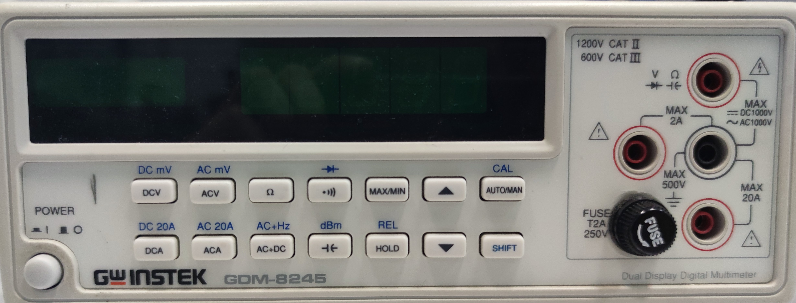
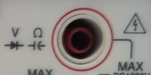
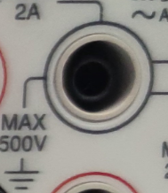
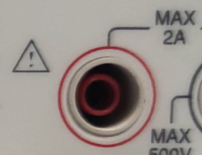
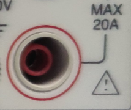
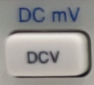
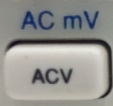
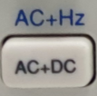
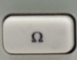
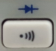

מדריך תפעול דידקטי - מעבדת חשמל
רב-מודד דיגיטלי (DMM - Digital Multimeter) הוא מכשיר מדידה רב-תכליתי המסוגל למדוד מתח, זרם והתנגדות. לרב-מודד יש בדרך כלל מספר זוגות הדקים נפרדים, ותמיד קיים הדק משותף בשם COMMON, המסומן לרוב בצבע שחור. זוג הדקים אחד משמש למדידת מתח והתנגדות, ואילו הדקים נוספים משמשים למדידות זרם בטווחים שונים.
דגם ה-GDM-8245 מצטיין בדיוק גבוה ובתצוגה כפולה המאפשרת מעקב אחר שני פרמטרים בו-זמנית.

איור 1: הלוח הקדמי של מכשיר GDM-8245
| חיבור | תפקיד ושימוש |
|---|---|
 |
חיבור ראשי למדידות מתח, התנגדות, קיבול ובדיקת דיודות. |
 |
חיבור ה-COM (אדמה). זהו ההדק המשותף לכל סוגי המדידות. |
 |
חיבור למדידת זרמים נמוכים - עד 0.5 \( A \) (500 \( mA \)). |
 |
חיבור למדידת זרמים גבוהים - עד 20 \( A \). |

מתח DC: מדידת מתח ישר. לחיצה על SHIFT לפני כן מאפשרת מדידה במילי-וולט (\( mV \)).
מתח AC: מדידת ערך ה-RMS של מתח חילופין.
DC+AC (True RMS): מדידת המתח המשולב. לחיצה על SHIFT עוברת למדידת תדר (\( Hz \)).
התנגדות: מדידת התנגדות (\( \Omega \)).
רציפות: בדיקת מוליכות. SHIFT עובר לבדיקת דיודות.